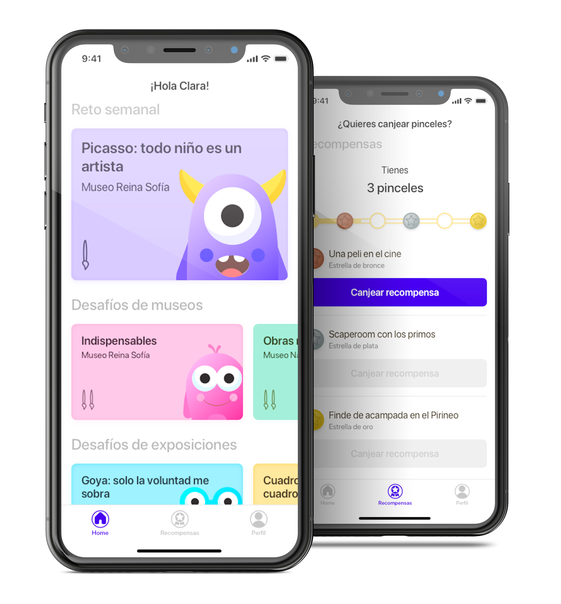
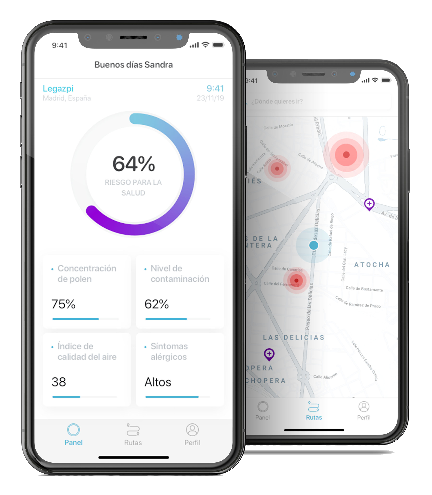
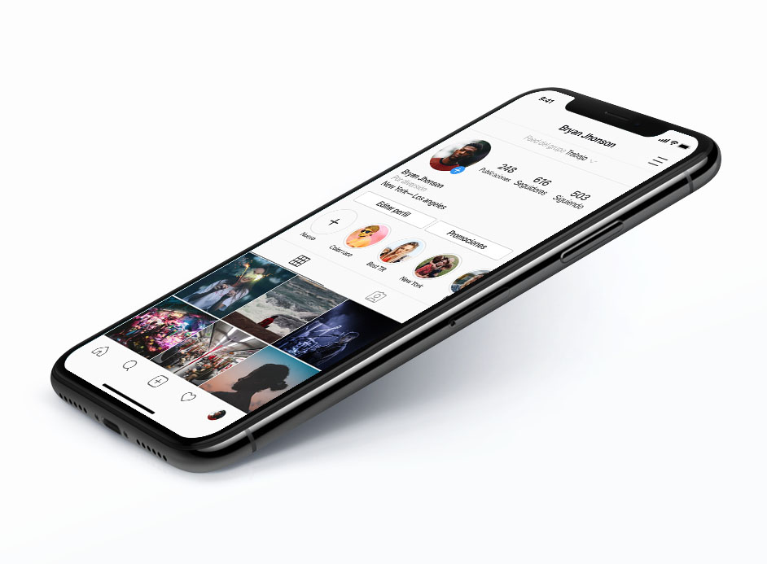

<!DOCTYPE html>
<html lang="en">

</html>

<head>
    <meta charset="utf-8" />
    <title>Portfolio - Alba Lozano</title>
    <meta content="Portfolio - Alba Lozano" property="og:title" />
    <!-- Imagen miniatura que se muestra al enviar link -->
    <!-- <meta
        content="https://uploads-ssl.webflow.com/5c6e6f46bf98b2013cf621c5/5cdbf62c56d6dd3315e2b16b_Portfolio%20SEO.jpg"
        property="og:image" /> -->
    <meta content="width=device-width, initial-scale=1" name="viewport" />
    <meta content="Webflow" name="generator" />
    <!-- Descargar o copiar el CSS, crear style.css y linkar al archivo local -->
    <link href="./css/style.css" rel="stylesheet" type="text/css" />
    <script src="https://ajax.googleapis.com/ajax/libs/webfont/1.6.26/webfont.js" type="text/javascript"></script>
    <script
        type="text/javascript">WebFont.load({ google: { families: ["Montserrat:100,100italic,200,200italic,300,300italic,400,400italic,500,500italic,600,600italic,700,700italic,800,800italic,900,900italic"] } });</script>
    <!--[if lt IE 9]><script src="https://cdnjs.cloudflare.com/ajax/libs/html5shiv/3.7.3/html5shiv.min.js" type="text/javascript"></script><![endif]-->
    <script
        type="text/javascript">!function (o, c) { var n = c.documentElement, t = " w-mod-"; n.className += t + "js", ("ontouchstart" in o || o.DocumentTouch && c instanceof DocumentTouch) && (n.className += t + "touch") }(window, document);</script>
    <!-- Favicon, lo puedes descargar y guardar en local. -->
    <link href="./img/5e1896c118096113f58b1343_img-web32.png" rel="shortcut icon" type="image/x-icon" />
    <link href="./img/5e1896c52047f6412d1a6b2e_img-web.png" rel="apple-touch-icon" />


    <style>
        .w-webflow-badge {
            display: none !important;
        }

        .navigation-items {
            background-color: transparent !important;
        }
    </style>
</head>

<body>
    <div class="section-2">
        <div data-collapse="medium" data-animation="default" data-duration="400" id="navigation-home"
            class="navigation-oscuro w-nav">
            <div class="navigation-items">
                <div class="navigation-wrap">
                    <nav role="navigation" class="navigation-items w-nav-menu">
                        <a href="index.html" class="navigation-item w-nav-link w--current">PORTFOLIO</a>
                        <a href="about.html" class="navigation-item w-nav-link">SOBRE MI</a></nav>
                    <!-- Las rallas del menu hamburguesa -->
                    <div class="menu-button w-nav-button"></div>
                </div>
            </div>
        </div>
        <div id="Section-superior" class="section">
            <div class="container">
                <div class="intro-wrap">
                    <h1 class="heading-jumbo">Hola, soy <span class="text-span">Alba Lozano</span> - Diseñadora UX/UI y
                        de producto</h1>
                </div>
            </div>
        </div>
    </div>
    <div class="section">
        <div id="works-grid" class="w-layout-grid works-grid">
            <div class="div-block-3">
                <div class="work-description"><a href="./art-kids.html" class="project-name-link">Art&amp;Kids<br /></a>
                    <div class="paragraph-light">Una manera de acercar el mundo del arte a los más pequeños a través de
                        gamificación. Los niños tienen que conseguir pinceles participando en retos y desafíos para
                        poder canjearlos por recompensas definidas por un adulto en función de los gustos del pequeño.
                    </div><a href="./art-kids.html" class="link-block-4 w-inline-block">
                        <div class="text-block-9">Ver más</div>
                    </a>
                </div>
            </div>
            <div class="div-block">
                <div class="work-description"><a href="./flusso.html" class="project-name-link">Flusso App<br /></a>
                    <div class="paragraph-light">Una aplicación para que los alérgicos puedan conocer los riesgos para
                        la salud a los que están expuestos a diario y la app sugiere rutas alternativas mucho más sanas.
                        El proyecto tuvo una duración de 2 semanas.<br /></div><a href="./flusso.html"
                        class="link-block-4 w-inline-block">
                        <div class="text-block-9">Ver más</div>
                    </a>
                </div>
            </div>
            <div class="div-block-3">
                <div class="work-description"><a href="tfg.html" class="project-name-link">Rediseño de una
                        intranet<br /></a>
                    <div class="paragraph-light">Propuesta de mejora de una parte de la intranet de una multinacional
                        española basada en la experiencia de usuario, el diseño de interacción y usabilidad.<br /></div>
                    <a href="tfg.html" class="link-block-4 w-inline-block">
                        <div class="text-block-9">Ver más</div>
                    </a>
                </div>
            </div>
            <div class="div-block">
                <div class="work-description"><a href="instagram.html" class="project-name-link">Instagram: nueva
                        funcionalidad<br /></a>
                    <div class="paragraph-light">Una nueva funcionalidad para la red social que le da la posibilidad al
                        usuario de crear grupos y segmentar quien puede ver y quien no cada una de sus
                        publicaciones.<br /></div><a href="instagram.html" class="link-block-4 w-inline-block">
                        <div class="text-block-9">Ver más</div>
                    </a>
                </div>
            </div>
        </div>
    </div>
    <div class="container">
        <h3 class="heading-3">¿Tienes algo que contarme?</h3><a 
            href="mailto:albalozanoguiu@gmail.com?subject=You&#x27;ve%20got%20mail!"
            class="email-link">albalozanoguiu@gmail.com</a>
    </div>
    <div class="footer-wrap">
        <div>
            <h1 class="heading-2">Alba Lozano Guiu</h1>
        </div>
        <!-- No olvides cambiar los links de Medium... -->
        <div class="footer-links"><a href="https://www.linkedin.com/in/albalozanoguiu/" target="_blank"
                class="footer-item">Linkedin</a><a href="https://medium.com/@albalozano97" target="_blank"
                class="footer-item">medium</a>
        </div>
        <script src="https://d3e54v103j8qbb.cloudfront.net/js/jquery-3.4.1.min.220afd743d.js" type="text/javascript"
            integrity="sha256-CSXorXvZcTkaix6Yvo6HppcZGetbYMGWSFlBw8HfCJo=" crossorigin="anonymous"></script>
        <script src="https://uploads-ssl.webflow.com/5e089ec5ed2a2716cc73e430/js/webflow.cda4688cf.js"
            type="text/javascript"></script>
        <!--[if lte IE 9]><script src="//cdnjs.cloudflare.com/ajax/libs/placeholders/3.0.2/placeholders.min.js"></script><![endif]-->
</body>

<script>
    var a = document.getElementsByClassName("w-webflow-badge")
    console.log(a[0])


</script>

</html>